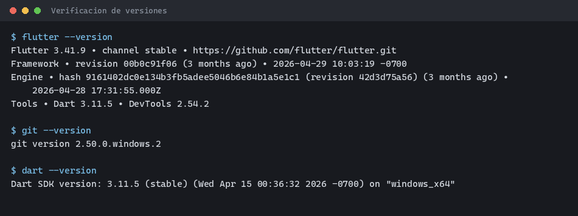
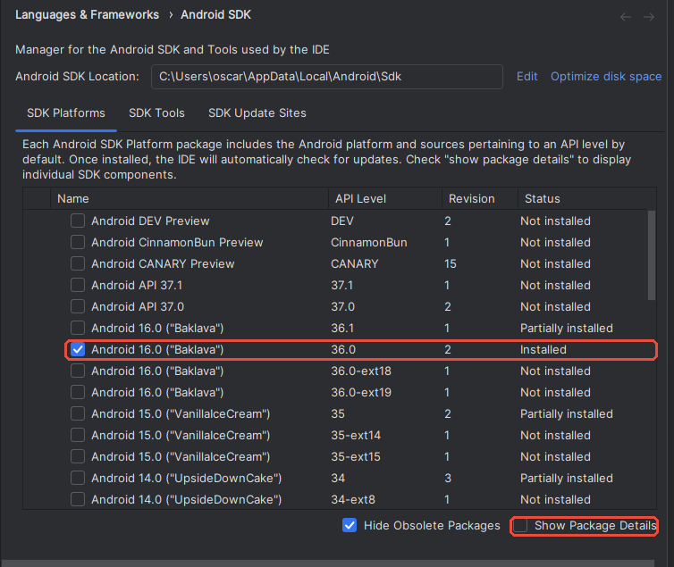
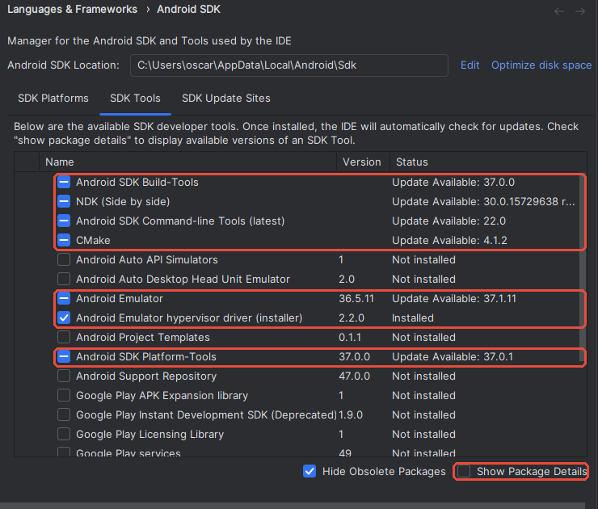
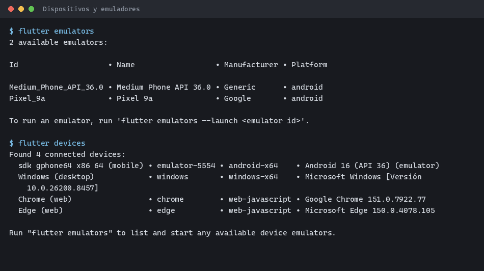
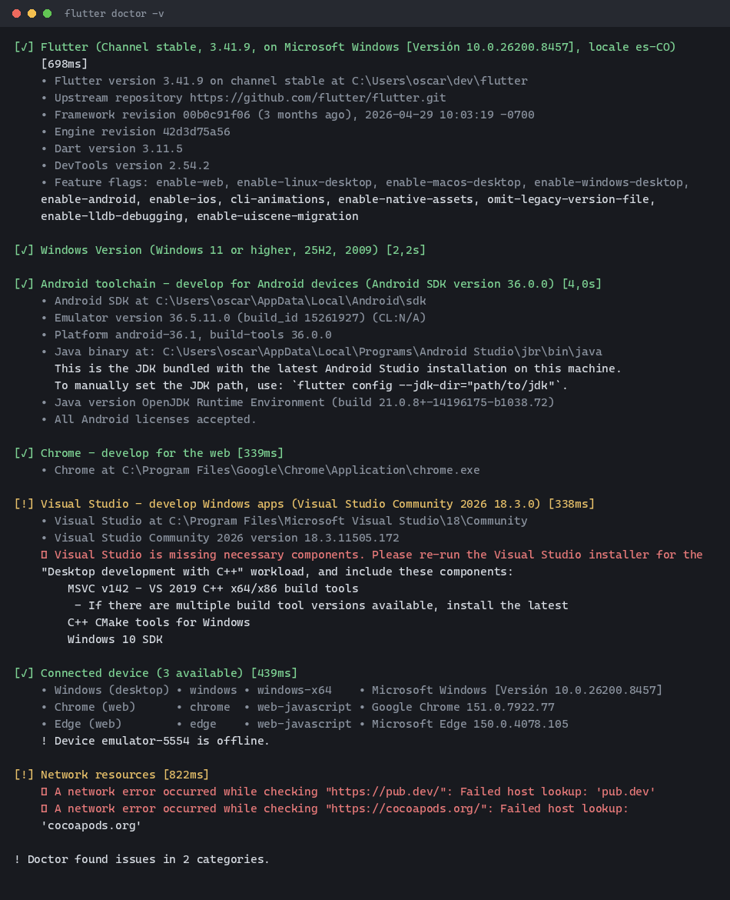
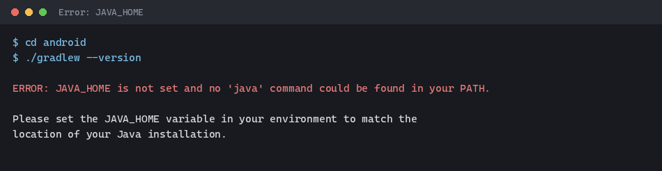

Tema 1. Instalación del entorno de desarrollo móvil
| Unidad | Unidad 2. Herramientas de trabajo en desarrollo de aplicaciones para dispositivos móviles |
| Tema | Tema 1. Instalación del entorno de desarrollo móvil |
1 Lo que vas a lograr
Al terminar esta guía tu computador queda con todas las herramientas del semestre instaladas y verificadas. En el Tema 2 creas tu primer proyecto sobre este entorno.
Objetivos concretos:
- Instalar Git, el SDK de Flutter, Android Studio y Visual Studio Code.
- Configurar el
PATHpara que los comandos de Flutter funcionen desde cualquier terminal. - Preparar un emulador o un teléfono Android listo para recibir aplicaciones.
- Diagnosticar la instalación con
flutter doctory dejarla sin errores que bloqueen.
Reserva 15 GB libres en disco y una conexión estable. La descarga completa supera los 6 GB entre el SDK de Flutter, Android Studio y las imágenes del emulador. En la sala de cómputo usa cable de red si lo tienes disponible.
Requisitos de la máquina
| Componente | Mínimo | Recomendado |
|---|---|---|
| Sistema operativo | Windows 10 de 64 bits, macOS 13 o Ubuntu 22.04 | Windows 11 o macOS 14 |
| Memoria RAM | 8 GB | 16 GB |
| Disco libre | 15 GB | 30 GB en unidad SSD |
| Procesador | x86_64 o Apple Silicon con virtualización | 4 núcleos o más |
Si tu equipo tiene 8 GB de RAM, conecta un teléfono Android por cable en vez de usar el emulador. Consume mucha menos memoria y responde más rápido.
Versiones de referencia
Esta guía se probó con estas versiones. Instala la misma línea o una superior.
| Herramienta | Versión probada |
|---|---|
| Flutter | 3.41.9 (stable) |
| Dart | 3.11.5 |
| Android SDK | 36.0.0 |
| NDK | 28.2.13676358 |
| JDK | 21 (OpenJDK) |
| Git | 2.50 |
| Visual Studio Code | 1.132 |
Cada paso trae las instrucciones para los tres sistemas. Sigue la subsección que corresponde a tu equipo e ignora las otras dos. El resultado final es el mismo en los tres casos.
2 Instalación paso a paso
1 Git
Descarga desde git-scm.com/install y sigue las instrucciones de tu sistema.
Windows
Descarga el instalador de 64 bits y ejecútalo. Acepta las opciones por omisión en todas las pantallas. La única que conviene revisar es Adjusting your PATH environment, donde debe quedar marcada la opción recomendada: Git from the command line and also from 3rd-party software.
macOS
Instala las herramientas de línea de comandos de Apple, que ya traen Git:
xcode-select --installSi usas Homebrew y prefieres una versión más reciente:
brew install gitLinux
# Ubuntu y derivadas
sudo apt update && sudo apt install -y git
# Fedora
sudo dnf install -y gitVerifica y configura tu identidad
Abre una terminal nueva y comprueba la instalación:
git --versionConfigura tu nombre y correo. Usa el correo institucional, porque con él vas a entregar el repositorio del proyecto más adelante.
git config --global user.name "Tu Nombre Completo"
git config --global user.email "tucorreo@correo.iue.edu.co"2 SDK de Flutter por instalación manual
Vas a descargar el SDK como archivo comprimido, descomprimirlo en una carpeta tuya y registrarlo en el PATH. Este método no depende de instaladores ni de gestores de paquetes, así que funciona igual en los tres sistemas y te deja el control de dónde queda todo.
Página oficial del método: docs.flutter.dev/install/manual.
Paso 2.1: descarga el paquete de tu sistema
Entra al enlace anterior y elige tu sistema operativo. Descarga el paquete del canal stable.
| Sistema | Archivo | Nota |
|---|---|---|
| Windows | .zip |
Un solo paquete para todos los equipos |
| macOS | .zip |
Escoge Apple Silicon o Intel según tu procesador |
| Linux | .tar.xz |
Un solo paquete de 64 bits |
En macOS, si no sabes cuál procesador tienes, abre el menú Apple y entra a Acerca de este Mac. Si dice Chip Apple M1, M2, M3 o M4, descarga el paquete de Apple Silicon.
Paso 2.2: descomprime en una carpeta estable
La carpeta que elijas queda como la ubicación definitiva del SDK. Si la mueves después, tienes que rehacer el PATH.
Evita Archivos de programa, Program Files, Escritorio y OneDrive. El compilador falla con rutas así. Usa una ruta corta y sin acentos.
Windows. Descomprime el contenido en C:\dev\flutter. Al abrir esa carpeta debes ver adentro bin, packages y el archivo flutter_console.bat.
macOS y Linux. Crea la carpeta y descomprime allí:
mkdir -p ~/development
cd ~/development
# macOS
unzip ~/Downloads/flutter_macos_arm64_3.41.9-stable.zip
# Linux
tar -xf ~/Downloads/flutter_linux_3.41.9-stable.tar.xzAjusta el nombre del archivo al que descargaste. El resultado queda en ~/development/flutter.
Paso 2.3: agrega Flutter al PATH
Windows
- Presiona la tecla Windows y escribe
variables de entorno. - Abre Editar las variables de entorno de esta cuenta.
- En el recuadro superior selecciona la variable
Pathy presiona Editar. - Presiona Nuevo y escribe
C:\dev\flutter\bin. - Acepta las tres ventanas con Aceptar.
- Cierra todas las terminales abiertas. Los cambios solo aplican a las que abras después.
macOS
Averigua cuál intérprete usa tu terminal:
echo $SHELLSi responde /bin/zsh, edita ~/.zshrc. Si responde /bin/bash, edita ~/.bash_profile. Agrega esta línea al final del archivo:
export PATH="$HOME/development/flutter/bin:$PATH"Aplica el cambio sin cerrar la sesión:
source ~/.zshrcLinux
Agrega la línea al final de ~/.bashrc:
export PATH="$HOME/development/flutter/bin:$PATH"Aplica el cambio:
source ~/.bashrcEn Ubuntu instala además las dependencias que Flutter necesita para compilar:
sudo apt install -y curl git unzip xz-utils zip libglu1-mesaPaso 2.4: verifica
Abre una terminal nueva y ejecuta:
flutter --version
flutter --version, git --version y dart --version en un equipo con la instalación completa. Dart viene incluido en el SDK de Flutter, así que no se instala aparte.
La primera vez, el comando tarda un poco más porque Flutter descarga sus componentes internos.
3 Android Studio y el SDK de Android
Descarga desde developer.android.com/studio.
Instalación según tu sistema
Windows. Ejecuta el archivo .exe y acepta las opciones por omisión.
macOS. Abre el .dmg y arrastra Android Studio a la carpeta Aplicaciones.
Linux. Descomprime el .tar.gz y ejecuta el lanzador:
sudo tar -xzf ~/Downloads/android-studio-*.tar.gz -C /opt
/opt/android-studio/bin/studio.shConfiguración inicial
Al abrirlo por primera vez, el asistente te pregunta el tipo de instalación. Elige Standard y confirma. El asistente descarga el SDK de Android, que es la descarga más pesada de toda la guía.
Paso 3.1: abre el SDK Manager
El SDK Manager es la ventana donde eliges cuáles piezas del SDK de Android quedan instaladas. Se llega por dos rutas según lo que tengas en pantalla:
- Con un proyecto abierto: menú Tools, luego SDK Manager.
- En la pantalla de bienvenida: botón More Actions, luego SDK Manager.
Cualquiera de las dos abre la ventana Settings en la sección Languages & Frameworks > Android SDK. Arriba aparece Android SDK Location, que es la carpeta donde queda todo instalado. En Windows suele ser C:\Users\TuUsuario\AppData\Local\Android\Sdk. Anota esa ruta: flutter doctor la reporta y te sirve para diagnosticar.
La ventana tiene tres pestañas. Vas a usar las dos primeras.
Paso 3.2: pestaña SDK Platforms
Marca Android 16.0 (“Baklava”), la fila cuya columna API Level dice exactamente 36.0.

36.1 es una versión posterior y 36.0-ext18 o 36.0-ext19 son extensiones. Ninguna sirve como reemplazo. Marca la que dice 36.0 a secas.
Paso 3.3: pestaña SDK Tools
Aquí van las herramientas de compilación. Marca estos siete componentes:
| Componente | Para qué se usa |
|---|---|
| Android SDK Build-Tools | Compila y empaqueta la aplicación |
| NDK (Side by side) | Flutter lo exige para compilar la parte nativa |
| Android SDK Command-line Tools (latest) | Acepta las licencias y expone los comandos del SDK |
| CMake | Construye la parte nativa junto con el NDK |
| Android Emulator | Ejecuta el emulador |
| Android Emulator hypervisor driver (installer) | Acelera el emulador. Solo aparece en Windows |
| Android SDK Platform-Tools | Trae adb, que comunica el equipo con el dispositivo |

Los demás no hacen falta: Android Auto, Google Play services, Project Templates y Support Repository quedan sin marcar.
Flutter 3.41 pide el NDK 28.2.13676358. Si instalas otra versión, la compilación falla con un mensaje de NDK no encontrado.
Marca la casilla Show Package Details en la esquina inferior derecha. La lista se despliega y muestra las versiones de cada componente. Busca NDK (Side by side) y marca 28.2.13676358.
Presiona Apply y confirma la descarga. Según tu conexión, esta parte tarda entre 10 y 30 minutos.
Es la causa número uno de que flutter doctor marque error en Android. Verifica que quede marcada antes de aplicar los cambios.
Paso 3.4: acepta las licencias del SDK
Desde una terminal, responde y a cada pregunta:
flutter doctor --android-licensesEl proceso termina cuando aparece All SDK package licenses accepted.
Android Studio trae su propio JDK, así que no instales Java por separado. Flutter lo detecta en la subcarpeta jbr de la instalación.
El controlador de hipervisor de la tabla es exclusivo de Windows. En Linux, el emulador usa KVM:
sudo apt install -y qemu-kvm
sudo adduser $USER kvmCierra la sesión y vuelve a entrar para que el cambio de grupo aplique. En macOS no hay que instalar nada: el sistema ya trae su propio hipervisor.
4 Visual Studio Code
Descarga desde code.visualstudio.com.
Windows. Ejecuta el instalador. En la pantalla de tareas adicionales marca Add to PATH, que habilita el comando code en la terminal.
macOS. Descomprime el .zip y arrastra Visual Studio Code a Aplicaciones. Para habilitar el comando en la terminal, abre VS Code, presiona Cmd+Shift+P, escribe shell command y elige Install ‘code’ command in PATH.
Linux. Descarga el paquete .deb o .rpm e instálalo:
# Ubuntu y derivadas
sudo apt install -y ./code_*.deb
# Fedora
sudo dnf install -y ./code-*.rpmInstala la extensión de Flutter
Dentro de VS Code, presiona Ctrl+Shift+X (Cmd+Shift+X en macOS) para abrir el panel de extensiones. Busca Flutter, la publicada por Dart Code, y presiona Install. Arrastra consigo la extensión de Dart, así que con esa basta.
Si prefieres la terminal:
code --install-extension Dart-Code.flutter5 Un dispositivo donde ejecutar aplicaciones
Escoge una de las dos opciones. Con 8 GB de RAM, escoge el teléfono físico.
Opción A: emulador
En Android Studio entra a More Actions, luego Virtual Device Manager, y presiona Add a new device. Elige un modelo Pixel, selecciona la imagen de API 36 y confirma la descarga.
Arranca el emulador desde la terminal. El primer arranque tarda varios minutos:
flutter emulators
flutter emulators --launch <id_del_emulador>Opción B: teléfono Android físico
- Entra a Ajustes, luego Acerca del teléfono.
- Presiona siete veces sobre Número de compilación hasta que aparezca el aviso de modo desarrollador.
- Vuelve a Ajustes, entra a Opciones de desarrollador y activa Depuración por USB.
- Conecta el cable y autoriza el equipo en el diálogo que aparece en el teléfono.
En Linux, instala además las reglas de dispositivo para que el sistema reconozca el teléfono:
sudo apt install -y android-sdk-platform-tools-commonConfirma que el dispositivo aparece
flutter devices
6 Diagnóstico con flutter doctor
Este comando revisa toda la cadena de herramientas y es el que vas a usar cada vez que algo falle durante el semestre.
flutter doctor -v
Lee la salida con este criterio:
| Sección | ¿Bloquea el curso? | Qué hacer |
|---|---|---|
| Flutter | Sí | Revisa la ruta y el PATH |
| Android toolchain | Sí | Acepta licencias e instala el SDK |
| Connected device | Sí | Arranca el emulador o conecta el cable |
| Chrome | No | Solo afecta compilación para web |
| Visual Studio (C++) | No | Solo afecta aplicaciones de escritorio en Windows |
| Xcode y CocoaPods | No | Solo afecta compilación para iOS en macOS |
| Network resources | No siempre | Revisa firewall o proxy de la red |
En la Figura 6 el equipo muestra dos advertencias y ninguna impide desarrollar para Android.
3 Errores frecuentes
Empieza siempre por flutter doctor -v. La salida casi siempre nombra el problema y sugiere el comando que lo corrige.
Error 1
flutter no se reconoce como comando
Causa. El PATH no quedó guardado, o abriste la terminal antes de modificarlo.
Solución. Cierra todas las terminales y abre una nueva. Si el error sigue, revisa que la ruta esté registrada:
# Windows, en PowerShell
$env:Path -split ';' | Select-String flutter# macOS y Linux
echo $PATH | tr ':' '\n' | grep flutterDebe imprimir la carpeta bin del SDK. Si no aparece, repite el paso 2.3.
Error 2
Android license status unknown
Causa. Faltan las Android SDK Command-line Tools, o nunca aceptaste las licencias.
Solución. Instala el componente desde SDK Manager y ejecuta:
flutter doctor --android-licensesResponde y a cada pregunta hasta que aparezca All SDK package licenses accepted.
Error 3
Flutter no encuentra el JDK

Causa. Ninguna herramienta del sistema apunta a un JDK. Flutter normalmente usa el que trae Android Studio, pero no lo encuentra si instalaste Android Studio en una ruta distinta a la predeterminada.
Solución. Indícale a Flutter dónde está el JDK de Android Studio:
flutter config --jdk-dir "ruta/hasta/Android Studio/jbr"Vuelve a ejecutar flutter doctor -v para confirmar que la sección de Android quedó en verde.
Error 4
El emulador no aparece o queda offline
Causa. El emulador se registra antes de terminar de arrancar, o el servidor de adb quedó colgado.
Solución. Espera a ver la pantalla de inicio de Android. Si el estado no cambia:
adb kill-server
adb start-server
adb devicesError 5
En Linux, doctor pide dependencias del sistema
Causa. La distribución no trae las bibliotecas que Flutter necesita para compilar.
Solución. Instala lo que falte según el mensaje:
sudo apt install -y curl git unzip xz-utils zip libglu1-mesa \
clang cmake ninja-build pkg-config libgtk-3-devError 6
En macOS, doctor marca Xcode y CocoaPods
Causa. Flutter revisa también la cadena de iOS, que no se usa en este curso.
Solución. No lo corrijas. Confirma que las secciones de Flutter, Android toolchain y Connected device estén en verde y continúa. Si más adelante quieres compilar para iPhone, instala Xcode desde la App Store.
4 Lista de chequeo del tema
Antes de cerrar el tema, confirma que tienes todo esto
5 Recursos
- Instalación manual del SDK: docs.flutter.dev/install/manual
- Descarga de Android Studio: developer.android.com/studio
- Descarga de Visual Studio Code: code.visualstudio.com
- Descarga de Git: git-scm.com/install
- Gestión de emuladores: developer.android.com/studio/run/managing-avds
- Alcocer, A. (2023). Flutter Complete Reference. Capítulos 1 y 2.
Lenguajes de computación para móviles. Fundación Universitaria María Cano. Facultad de Ingeniería. Semestre 2026-02.
Transparencia. La redacción de esta guía contó con el apoyo de inteligencia artificial, usando el modelo Claude Sonnet 5 de Anthropic. Todo el contenido fue revisado y validado. Las salidas de terminal son capturas reales tomadas durante la preparación del material.